手臂上肉肉比较多的mm，可以选择泡泡袖碎花裙或上衣。
碎花裙作为我们每年夏日的必备单品，真的是从不迟到。每年都会搭配着新的版型重新出道，哪一次不是轻松复活无数少女的心~
但老实说，真的很少有人能把碎花裙穿出自己的感觉来，大部分小伙伴穿上之后都是普普通通的感觉。
既然这样，今天就来给大家上一堂关于碎花裙的私教课吧！
如何选择底色
以碎花服装为例，选择碎花裙的时，底色的选择是最为关键。
底色即是指布料的颜色。而一条裙子的底色往往也就决定了一条裙子的年龄层次。
一般来说，素色的碎花单品是最好驾驭的（敲黑板！！），其中白色是最不挑人的颜色。
当清新淡雅的素色遇上繁复热烈的碎花，这条小裙子就会变得明亮，不浮夸也不媚俗，特别耐看~
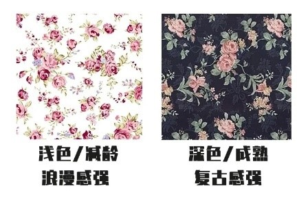
除了版型的选择，碎花裙的底色也是有讲究的。
明亮的底色加上碎花，往往带来的视觉冲击感较强，给人青春有活力的感觉，适合五官比较硬朗的姐妹们。
而素色则更加恬静温柔，五官清新的宝贝们可以放心尝试。偏暗的色调则更加的稳重成熟有质感。
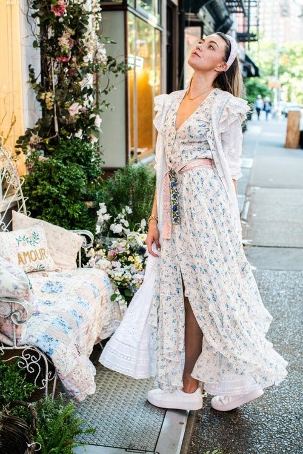
相比起来，浅色底色的裙子可以让你看起来活力又清新，而深色底色的裙子则显得更加有气场和个性~
选择深色的碎花裙的好处还有超级显瘦！尤其是黑色，经典且百搭~
而在气温持续上升的夏天，小编特别推荐马卡龙与莫兰迪色系的碎花裙，浪漫的度假氛围轻松拥有，穿出去野餐拍照也是超级有风度的哦~
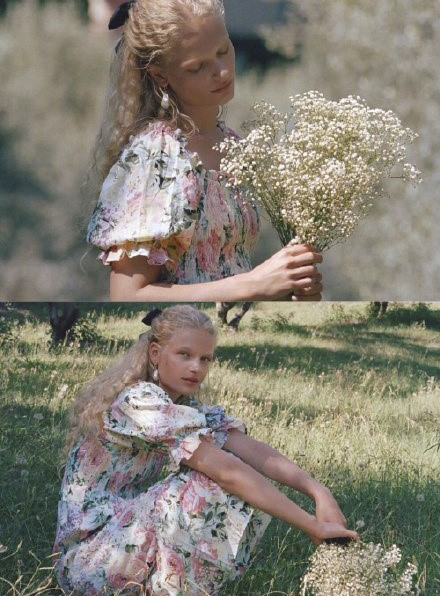
比起浓烈的亮彩色，淡彩色会显得更加青春有活力哦~
如何选择印花
碎花裙最重要的是什么？当然就是印花啦~印花的花色及大小通常都是直接影响到整条裙子的风格。
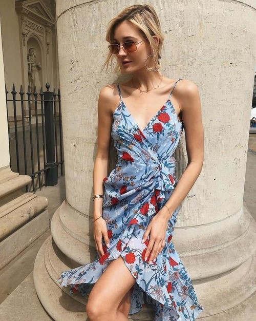
淡色的花朵绝对是我们的首选。清新的花色给人的感觉更为舒适。
花色如果过杂过浓都会显老气，一个不小心就会变成欧巴桑同款，因此花色要尽量简约，底色和碎花花色也要注重协调，如果颜色对比过于强烈，则会显得很突兀。
同色系的搭配不容易出错~
除此之外，碎花图案的大小也是决定整身look视觉的关键！小碎花比大碎花更好驾驭，小的碎花自带清新活泼的感觉，少女感更强。
而大碎花则通常更能体现优雅与成熟感，更有女人味。
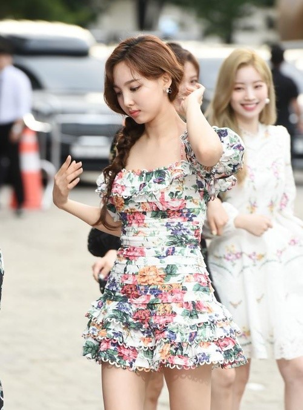
其实要单元来说的话，一定是小碎花更加容易驾驭，而且法式浪漫的气息也更加强烈，更加减龄。（不过如果你对自己的气场够自信，大碎花也很可的哦！）
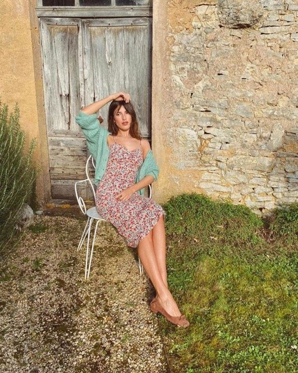
就像我们最常知道的那样“小碎花清新可爱，大碎花优雅成熟。”姐妹们可以根据自己的风格自行选择哦！
（Tips：身材较为丰满的小姐妹，最好选择分布稀松但比较大块的印花，成片的大印花一定会让你瞬间胖五斤！！）
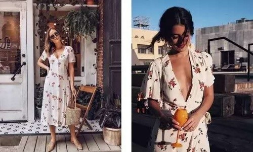
如何选择版型
做好上面的功课之后，我们就离美丽出街只差最后一步——选择版型。俗话说“人靠衣装”，再好看的衣服都要适合自己才是最美的~
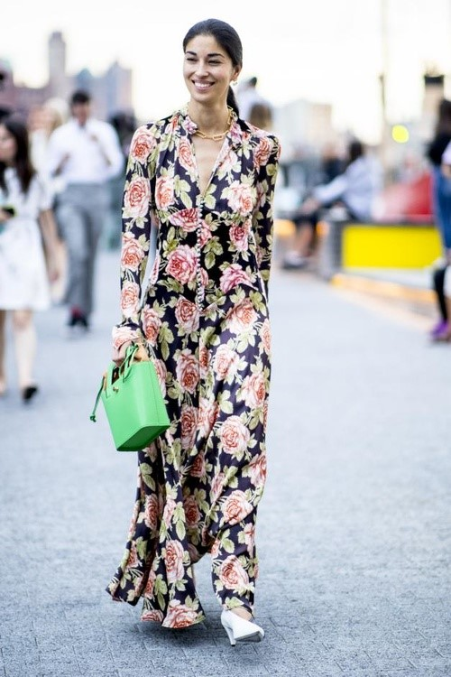
手臂上肉肉比较多的mm，可以选择泡泡袖碎花裙或上衣。
泡泡袖的设计不仅可以遮挡手臂的肉，而且是裙子少女感的点睛之笔，再高级一些，我们可以选择腰部有松紧带的裙子或者自己搭配腰带，
这些小心机设计可以很好的塑造腰部线条，提升身材比例。
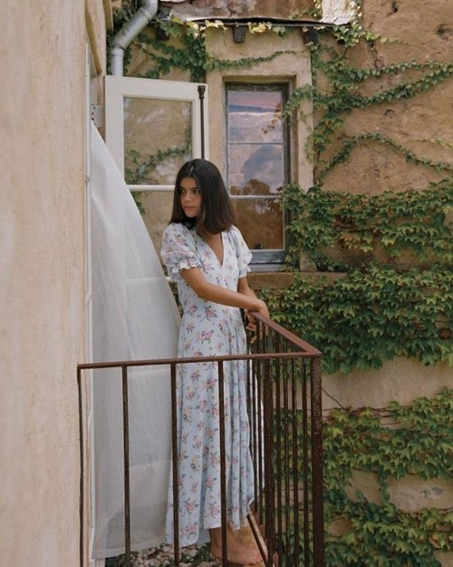
或是可以选择一些V领和开叉款式的长裙，时髦又显瘦。长裙的开叉设计，不仅能修饰腿部的线条，还能轻松拉长身材比例。这无疑是微胖女生最友好的夏日碎花穿搭了！
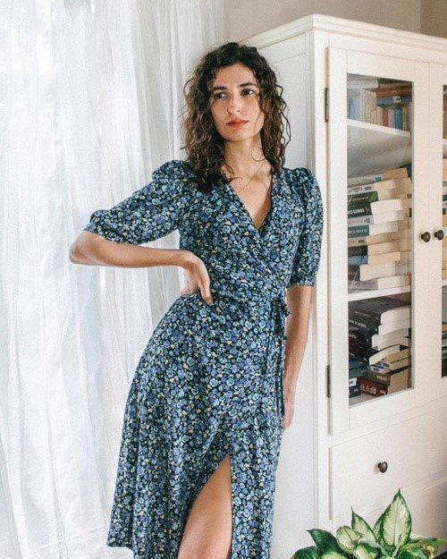
身材好的mm可以大胆地选择细吊带或一字肩紧身裙，露出性感锁骨和美丽的颈线肩线，秀出好身材~
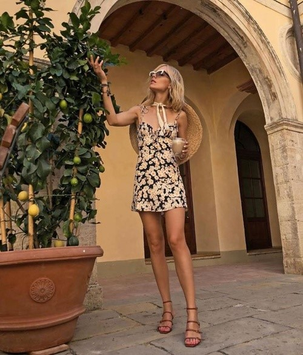
其实要把碎花裙穿的好看也不难，学会选择是关键！通常来说，简洁大方的款式是最适合的了，就像直筒和A字的版型，简直绝了，就算是小个子女生也不怕！
而在选择碎花裙时一个最致命的关键点就是腰部的构造，腰线的高低和收腰的设计都非常重要！
碎花本身就是比较繁杂的样式，如果腰部设计不得体，穿上之后只会显得真个人更加臃肿，就像穿了一个花被单，土气又显矮。
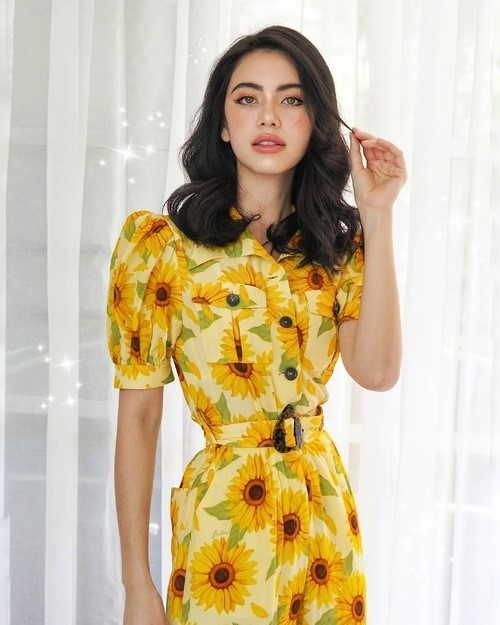
对于我们大多数姐妹来说，裙子的腰线高于自身腰线五厘米是最合适的位置，显高也显瘦，搭配上一个低于锁骨的领口设计（领口过高会导致整体包裹感太强，显臃肿！）
简直就是有点小性感同时又很小清新。
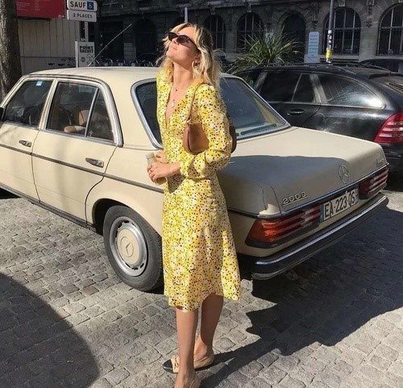